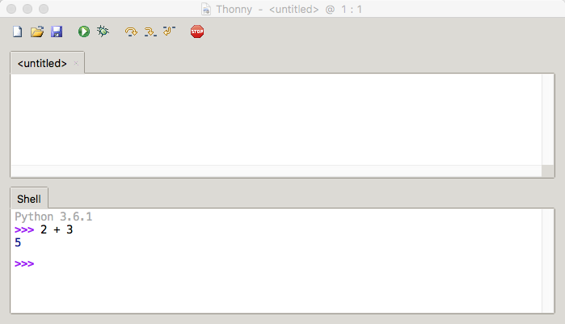

2. Variables, Data Types, and User Input¶
Quick Overview of Day
Give more details about variables. Reinforce the idea of data types. Practice some Python problems with simple input/output.
- CS20-CP1 Apply various problem-solving strategies to solve programming problems throughout Computer Science 20.
- CS20-FP1 Utilize different data types, including integer, floating point, Boolean and string, to solve programming problems.
2.1. What Does This Program Do?¶
Remember the we learned four primitive data types in our overview of Python. They are:
intfloatstringbool
Note
Your teacher may choose to use the following examples as a class activity, by displaying the examples, and having you take a guess as to what you think each will do before running the code.
For the following examples, consider the data type of each variable. What will the program output? Why?
2.2. Using Thonny¶
There are two ways to use Thonny: shell mode and program mode. In shell mode, you type Python expressions into the Python shell, and the interpreter immediately shows the result. The example below shows the Python shell at work.
The >>> is called the Python prompt. The interpreter uses the prompt to
indicate that it is ready for instructions. We typed 2 + 3, then pressed Enter. The
interpreter evaluated our expression and replied 5. On the next line
it gave a new prompt indicating that it is ready for more input.
Working directly in the interpreter is convenient for testing short bits of code because you get immediate feedback. Think of it as scratch paper used to help you work out problems.
Alternatively, you can write an entire program by placing lines of Python instructions
in a file and then use the interpreter to
execute the contents of the file as a whole. Such a file is often referred to as source code. For
example, we used Thonny to create a source code file named firstprogram.py with
the following contents:

By convention, files that contain Python programs have names that end with
.py . Thonny will save your files with a .py extension automatically, and you should be able to open them in Thonny by double clicking them in File Explorer (or Finder).
Note
Notice that when we were using the shell, we didn’t have to worry about using print() to see the value of a statement. The shell does that automatically. However, if we are using the code editor, we need to call print() any time we want to see output.
Check your understanding
-
microbit-examples-38: Source code is another name for:
- the instructions in a program, stored in a file.
- The file that contains the instructions written in the high level language is called the source code file.
- the language that you are programming in (e.g., Python).
- This language is simply called the programming language, or simply the language.
- the environment/tool in which you are programming.
- The environment may be called the IDE, or integrated development environment, though not always.
- the number (or "code") that you must input at the top of each program to tell the computer how to execute your program.
- There is no such number that you must type in at the start of your program.
2.3. Comments¶
As programs get bigger and more complicated, they get more difficult to read. Formal languages (e.g. programming languages) are dense, and it is often difficult to look at a piece of code and figure out what it is doing, or why. For this reason, it is a good idea to add notes to your programs to explain in natural language what the program is doing. These notes are called comments.
A comment in a computer program is text that is intended only for the human
reader - it is completely ignored by the interpreter.
In Python, the # token starts a comment. The rest of the line is ignored.
Every program you write should start with a comment header, which could look something like this:
Note
Create a folder (call it Computer Science 20) on your computer to hold all of the code you will write in Python this semester. Save the file you created above as template.py, and save it in that folder.
Notice that when you run this program, it only prints the phrase Hello, World! None of the comments appear. You’ll also notice that we’ve left a blank line in the program. Blank lines are also ignored by the interpreter, but comments and blank lines can make your programs much easier for humans to parse. Use them liberally!
Check your understanding
-
microbit-examples-39: What are comments for?
- To tell the computer what you mean in your program.
- Comments are ignored by the computer.
- For the people who are reading your code to know, in natural language, what the program is doing.
- The computer ignores comments. It's for the humans that will "consume" your program.
- Nothing, they are extraneous information that is not needed.
- Comments can provide much needed information for anyone reading the program.
- Nothing in a short program. They are only needed for really large programs.
- Even small programs benefit from comments.
2.4. Variables¶
One of the most powerful features of a programming language is the ability to manipulate variables. A variable is a name that refers to a value.
Assignment statements create new variables and also give them values to refer to.
message = "What's up, Doc?"
n = 17
pi = 3.14159
This example makes three assignments. The first assigns the string value
"What's up, Doc?" to a new variable named message. The second gives the
integer 17 to n, and the third assigns the floating-point number
3.14159 to a variable called pi.
The assignment token, =, should not be confused with equality (we will see later that equality uses the
== token). The assignment statement links a name, on the left hand
side of the operator, with a value, on the right hand side. This is why you
will get an error if you enter:
17 = n
Tip
When reading or writing code, say to yourself “n is assigned 17” or “n gets the value 17” or “n is a reference to the object 17” or “n refers to the object 17”. Don’t say “n equals 17”.
A common way to represent variables on paper is to write the name with an arrow pointing to the variable’s value. This kind of figure, known as a reference diagram, is often called a state snapshot because it shows what state each of the variables is in at a particular instant in time. (Think of it as the variable’s state of mind). This diagram shows the result of executing the assignment statements shown above.

If you ask Python to evaluate a variable, it will produce the value that is currently linked to the variable. In other words, evaluating a variable will give you the value that is referred to by the variable.
In each case the result is the value of the variable.
Variables also have types; again, we can ask the interpreter what they are.
The type of a variable is the type of the object it currently refers to.
We use variables in a program to “remember” things, like the current score at the basketball game. But variables are variable. This means they can change over time, just like the scoreboard at a basketball game. You can assign a value to a variable, and later assign a different value to the same variable.
Note
This is different from math. In math, if you give x the value 3, it
cannot change to refer to a different value half-way through your
calculations!
To see this, read and then run the following program.
You’ll notice we change the value of day three times, and on the third
assignment we even give it a value that is of a different type.
(variables_example_3)
Check your understanding
- Nothing is printed. A runtime error occurs.
- It is legal to change the type of data that a variable holds in Python.
- Thursday
- This is the first value assigned to the variable day, but the next statements reassign that variable to new values.
- 32.5
- This is the second value assigned to the variable day, but the next statement reassigns that variable to a new value.
- 19
- The variable day will contain the last value assigned to it when it is printed.
microbit-examples-40: What is printed when the following statements execute?
day = "Thursday"
day = 32.5
day = 19
print(day)
2.5. Variable Names and Keywords¶
Variable names can be arbitrarily long. They can contain both letters and
digits, but they have to begin with a letter or an underscore. You should use long, descriptive variable names. For example, if you were creating a program to calculate how much gas a car uses, a good variable name might be litres_per_100_kms. A bad variable name in that case would be l. Using a single letter as the variable name usually makes your program harder to understand for other people. Although that can be a bit annoying to type out a long variable name the first time, once you have typed it once in Thonny, you should be able to simply type the first few letters of the variable name, then press Ctrl-Space to have the rest of the variable name auto-complete for you. If that doesn’t work for you, check Thonny’s preferences.
The underscore character ( _) can also appear in a name. It is often used in
names with multiple words, such as my_name or price_of_tea_in_china. This is the preferred way to write long variable names in Python, and you should use this style!
Caution
Variable names can never contain spaces.
There are some situations in which names beginning with an underscore have special meaning, so a safe rule for beginners is to start all names with a letter.
Although it is legal to use uppercase letters, by convention we don’t. If you choose to use uppercase letters, remember that case matters. Bruce and bruce are different variables.
Note
Conventions about variable names differ from one language to another. Another common variable naming pattern is to use a lowercase letter for the first word, and to capitalize the starting letter of each word that follows. For example, you might use myName or priceOfTeaInChina. This is often called camelCaps (think of the humps of a camel).
If you give a variable an illegal name, you get a syntax error. In the example below, each of the variable names is illegal.
76trombones = "big parade"
more$ = 1000000
class = "Computer Science 101"
76trombones is illegal because it does not begin with a letter. more$
is illegal because it contains an illegal character, the dollar sign. But
what’s wrong with class?
It turns out that class is one of the Python keywords. Keywords define
the language’s syntax rules and structure, and they cannot be used as variable
names.
Python has thirty-something keywords (and every now and again improvements to
Python introduce or eliminate one or two):
| and | as | assert | break | class | continue |
| def | del | elif | else | except | exec |
| finally | for | from | global | if | import |
| in | is | lambda | nonlocal | not | or |
| pass | raise | return | try | while | with |
| yield | True | False | None |
You might want to keep this list handy. If the interpreter complains about one of your variable names and you don’t know why, see if it is on this list.
Programmers generally choose names for their variables that are meaningful to the human readers of the program — they help the programmer document, or remember, what the variable is used for.
2.6. User Input¶
If you want the user to type something, you can use the input() function. input() will always return a string. You will need to convert it to an int or a float if you are expecting a number.
The following example is not going to work when you try to run it. Can you figure out what is wrong and fix it? Hint: think about data types!
Do not look at this sample solution unless you have spent time attempting to create your own solution!
This is one possible solution:
current_year = input("What is the current year?")
grad_year = input("What year will you graduate from high school?")
# convert user input to be integers, so we can subtract
current_year = int(current_year)
grad_year = int(grad_year)
year_difference = grad_year - current_year
print("You will graduate in", year_difference, "years.")
2.7. Practice Problems¶
Try the following practice problems. Be sure that you know how to do the question with paper/pencil before you attempt to write a solution in Python! You can either work directly in the textbook, or using Thonny. Either way, copy/paste your finished code into Thonny and save your solution into your Computer Science 20 folder when you finish!
Note
Remember that every time you take input() from the user, the data type of that input will be a string! You might want to look back at Converting Between Data Types.
2.7.1. Area of a Circle¶
Write a program that will compute the area of a circle. Prompt the user to enter the radius and print a nice message back to the user with the answer.
Do not look at this sample solution unless you have already finished creating your own solution!
This is one possible solution:
# Area of a Circle Calculator
# Dan Schellenberg
# Oct 18, 2017
pi = 3.14
radius = input("Please enter the radius: ")
radius = float(radius) #convert input into a number
area = pi*radius**2
print("The area of the circle is", area)
2.7.2. Area of a Rectangle¶
Write a program that will compute the area of a rectangle. Prompt the user to enter the width and height of the rectangle. Print a nice message with the answer.
Do not look at this sample solution unless you have already finished creating your own solution!
This is one possible solution:
# Area of a Rectangle Calculator
# Dan Schellenberg
# Oct 19, 2017
length = input("Enter the length of the rectangle: ")
width = input("Enter the width of the rectangle: ")
#convert user input into numbers
length = float(length)
width = float(width)
area = length * width
print("The area of the rectangle is", area)
2.7.3. Car Gas Usage¶
Write a program that will compute the Litres per Kilometers (l/100km) that a car uses. Promp the user to enter the number of kilometers driven, and the number of litres used. Print a nice message with the answer in liters/100kms. Note: If you aren’t sure how to calculate L/100km, you should try to calculate it by hand before writing a program. To help you check your work, if you drove 500km, and used 35L of gas, you should calculate using 7 L/100km.
Do not look at this sample solution unless you have already finished creating your own solution!
This is one possible solution:
# Gas Mileage Calculator
# Dan Schellenberg
# Oct 19, 2017
kilometers_driven = input("How many kilometers did you drive? ")
litres_used = input("How many litres of gas did it take? ")
#convert user input to numbers
kilometers_driven = float(kilometers_driven)
litres_used = float(litres_used)
gas_usage = litres_used / kilometers_driven * 100
print("Your car is using", gas_usage, "L/100km")
2.7.4. If You Finish Early¶
If you completed all the questions above before the end of class, you might want to try one of the following extra challenges:
- making a calculator for a more complicated math problem.
- you look at the clock and it is exactly 2pm. You set an alarm to go off in 51 hours. At what time does the alarm go off? Write a Python program to solve the general version of this problem. Ask the user for the time now (in hours), and ask for the number of hours to wait. Your program should output what the time will be on the clock when the alarm goes off. Note: You might want to look back at Math Operators.